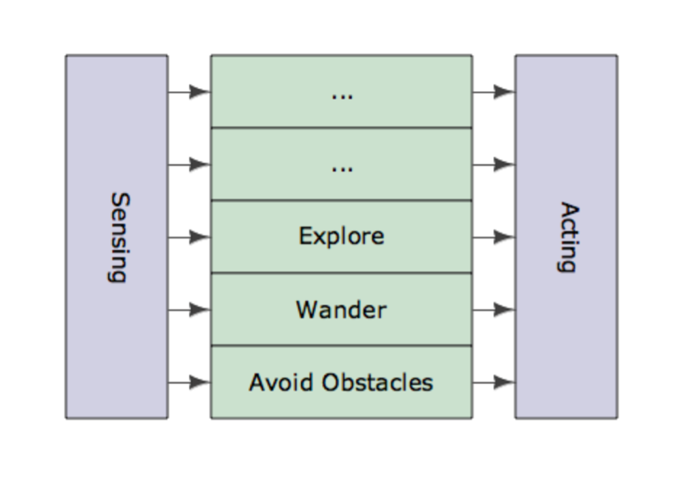
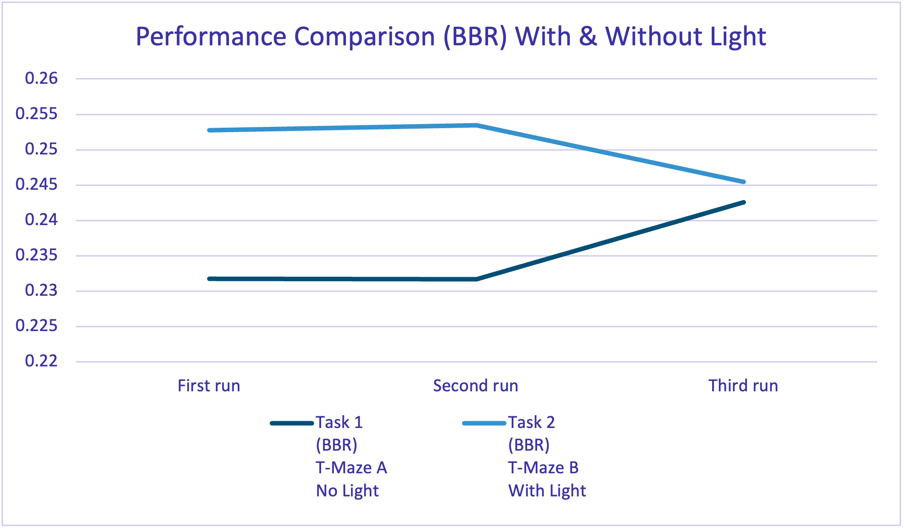
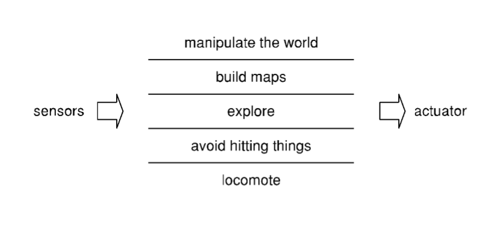
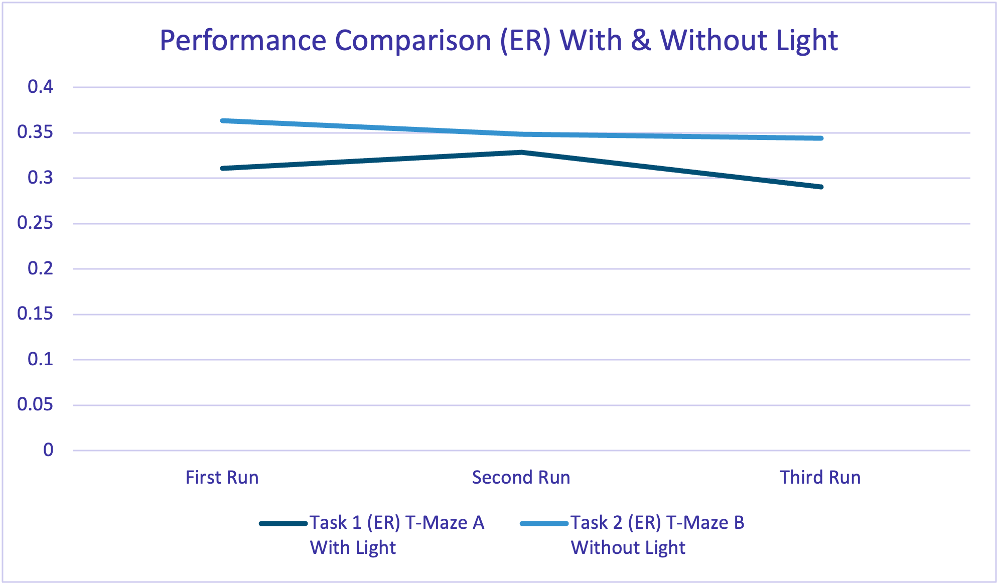

Robotics is a fast-growing field that combines engineering, programming, and artificial intelligence to build machines that can work on their own to solve real-world problems (Moy, 2019). This report looks at two methods for creating intelligent controllers for an e-puck robot in a T-Maze environment: Behavior-Based Robotics (BBR) and Evolutionary Robotics (ER). Both methods take inspiration from biology to make robots more adaptable and efficient.
Behavior-Based Robotics (BBR) focuses on using simple behaviors to control robots. These behaviors are layered to handle more complex tasks, allowing the robot to react to its environment in real-time. This method avoids traditional plans or central control and instead relies on the robot's direct interactions with its environment.
On the other hand, Evolutionary Robotics (ER) uses ideas from natural evolution, such as selection and mutation, to improve robot controllers over time. ER works by testing many designs and keeping the ones that perform best. This makes it good for solving problems where the best solution isn't known in advance. ER can also be used to improve both the software and physical design of robots.
In this project, the e-puck robot must move through a T-Maze, follow environmental clues, and find a reward zone. By creating and testing controllers based on BBR and ER, this study will compare how well these methods work in terms of efficiency and completing the task.
This report aims to:
BBR is a method of controlling robots where actions are guided directly by sensor readings rather than relying on centralized decision-making or complex planning. This approach is effective for navigating unpredictable environments. A practical example of BBR is robot vacuum cleaners, which navigates around obstacles and change directions based on proximity sensors.
BBR is built on the principle of a decentralized control system, where independent behaviors are combined to produce robust, dynamic, and adaptable robots. Unlike centralized systems, which process all information through a single decision-making unit, BBR uses a layered architecture where simple behaviors operate simultaneously or in coordination. The most well-known framework for implementing BBR is Rodney Brooks' Subsumption Architecture, which organizes behaviors into hierarchical layers, where higher layers have higher priority over the lower layers.

The Subsumption Architecture is a design methodology for building robots that rely on layers of simple behaviors to handle complex tasks. Each layer corresponds to a specific behavior, such as avoiding obstacles or following a wall. In our project the layers are organized as shown below:
In our BBR implementation, an e-puck robot was configured to operate in a T-Maze environment. The robot was designed to function without flags or memory, relying only on sensory input to navigate. This setup ensured that its behavior would be dynamic and adaptable, reflecting the principles of BBR. The implementation involved two files:
The supervisor file plays an important role in setting up the robot's environment. It resets the robot's starting position before each run and alternates the placement of light sources to simulate Maze A and Maze B. This ensures that the robot's behavior is tested across both conditions. The supervisor communicates with the robot by sending "start" and "stop" signals during each trial. These signals trigger or halt the robot's operations, providing control over the simulation process.
The controller file is responsible for defining the robot's actions based on the data it receives from its sensors. The implementation begins with setting up the robot's motors and sensors to ensure it is ready to interact with its environment. The left and right motors are initialized. Both motors are initially set to a speed of zero, keeping the robot stationary until specific movement commands are given.
The controller also enables the robot's sensors, which include eight proximity sensors (ps0–ps7) and eight light sensors (ls0–ls7). The proximity sensors detect obstacles around the robot, while the light sensors measure light levels to make decisions based on the instructions given.
The robot's behaviors are implemented in a loop within the run method, which constantly evaluates sensor inputs and adjusts motor speeds accordingly. By default, the robot moves forward with both motors set to a base speed of 2.0. If the light sensors detect a strong light source, the robot adjusts its direction by increasing the speed of the left motor slightly (to 2.3), causing it to turn gently towards the right wall. This behavior helps the robot in turning right when light is detected.
To avoid collisions, the controller uses the proximity sensors to detect obstacles. If the robot is too close to a wall on the left, it slows the right motor to steer away from the wall. Similarly, if it detects a wall on the right, it slows the left motor to steer in the opposite direction. At T-junctions, where a wall is detected, the robot does a sharp left turn. This is done by setting the left motor to a high speed of 6.0 while reversing the right motor at -6.0, this behavior ensures the robot goes left when there is no light detected.
Additionally, the controller can respond to external commands sent via the supervisor file. For instance, if a "stop" signal is received, both motors are immediately set to zero, halting the robot. This continuous evaluation and adjustment of behaviors allow the robot to navigate the T-Maze smoothly and adaptively, responding dynamically to obstacles, light sources, and control signals.
| Time in minutes | ||||
|---|---|---|---|---|
| First run | Second run | Third run | Average Time | |
| Task 1 (BBR) T-Maze A No Light | 0.23177 | 0.23168 | 0.24256 | 0.23534 |
| Task 2 (BBR) T-Maze B With Light | 0.25279 | 0.25344 | 0.24544 | 0.25056 |
The performance of the Behavior-Based Robotics (BBR) approach was tested in two T-Maze tasks: one without a light source (T-Maze A) and one with a light source (T-Maze B). In each task, the robot completed three runs, and we calculated the average completion time.
In T-Maze A (No Light), the robot needed to turn left at the junction. It achieved this by adjusting the speeds of its wheels, the right wheel successfully moved faster than the left wheel, allowing it to make the left turn. The robot completed this task with an average time of 0.23534 minutes across the three runs.
In T-Maze B (With Light), the robot had to turn right by following a light source placed at the end of the right path. It detected the light using its light sensors at the beginning of the maze. The robot successfully adjusted its wheel speeds where the left wheel moved faster than the right wheel allowing it to turn right. The average completion time for this task was 0.25056 minutes.

The line chart shows that the times for T-Maze B are consistently higher than those for T-Maze A. This suggests that the light-following behavior made the navigation more challenging, but the robot was still able to complete the task.
ER is a bio-inspired approach that uses evolutionary principles to design and optimize robot controllers. Instead of relying on explicit programming, ER allows the robot's behaviour to emerge and improve through iterative cycles of selection, crossover, and mutation. This method mirrors natural evolution, where only the fittest solutions are retained, enabling robots to adapt and thrive in complex, dynamic environments.

The diagram illustrates the multi-layered functionality of ER-based controllers, where sensory inputs are transformed into outputs through an evolutionary process. The bottom layer focuses on basic motor functions like locomotion, while higher layers gradually build more complex behaviours such as navigating the T-Maze and making decisions on where to turn. This hierarchical approach ensures that controllers evolve incrementally, improving performance over multiple generations.
In our implementation, the e-puck robot was tasked with navigating a T-Maze using an ER approach. The robot's controller was structured around a Multi-Layer Perceptron (MLP), whose weights were optimized using a Genetic Algorithm (GA). The ER implementation consists of four main files: epuck_python – ER.py, supervisorGA – ER.py, ga.py, and mlp.py.
The robot's controller (epuck_python – ER.py) integrated sensory inputs, such as proximity and light sensors, with the MLP to determine motor commands. The MLP architecture included an input layer for sensor data, multiple hidden layers for processing, and an output layer to calculate motor speeds. Sensor data were normalized and passed through the MLP using forward propagation, allowing the robot to dynamically adjust its movements based on its environment. Additionally, a fitness function evaluated the robot's performance, rewarding forward motion and collision avoidance while penalizing spinning.
The supervisor file (supervisorGA – ER.py) managed the evolutionary loop. It initialized the population of genotypes, tested each individual in the simulated environment, and applied genetic operators to produce the next generation. Tasks included resetting the robot's position, sending genotypes for evaluation, and collecting fitness scores. Over multiple generations, the GA refined the population by retaining the best solutions and performing crossover and mutation.
The GA implementation in ga.py ensured the optimization of MLP weights. It created a large initial population, evaluated fitness for each individual, and used selection to retain the most successful genotypes. Crossover combined these genotypes to explore new solutions, while mutation introduced random variations, allowing the algorithm to escape local optima. Over generations, this process improved the robot's ability to navigate the T-Maze efficiently.
The MLP, processed sensor data and output motor commands, learning optimal responses through the GA.
This ER approach shows how evolutionary processes can optimize robot behaviour in challenging environments. By evolving the MLP weights over time, the robot developed increasingly effective strategies for navigating the T-Maze, highlighting the adaptability and robustness of ER-based solutions.
| Time in Minutes | ||||
|---|---|---|---|---|
| First Run | Second run | Third Run | Average Time | |
| Task 1 (ER) T-Maze A Without Light | 0.31104 | 0.32896 | 0.29056 | 0.31019 |
| Task 2 (ER) T-Maze B With Light | 0.36352 | 0.34848 | 0.34432 | 0.35211 |
The results show the performance of the ER approach in two T-Maze tasks: one without a light source (T-Maze A) and another with a light source (T-Maze B). For each task, the robot completed three runs, and the average completion time was recorded.
In T-Maze A (No Light), the e-puck robot successfully navigated the maze and turned left at the junction. The evolved controller correctly interpreted sensor inputs, resulting in consistent navigation performance. The average completion time was 0.31019 minutes, reflecting reliable behavior across runs.
In T-Maze B (With Light), the robot detected the light source and used it as a cue to turn right at the junction. Despite successfully incorporating light detection into its decision-making, the additional task increased the overall completion time slightly, with an average of 0.35211 minutes. This increase shows the added complexity of integrating light detection.

The fitness plot shows the improvement in performance during training, with both the best (red) and average (green) fitness values increasing across generations.
The development of controllers for the e-puck robot using BBR and ER provided info into the strengths and limitations of these approaches. Both methods presented different strategies for autonomous navigation within the T-Maze environment, but their differences in adaptability, design, complexity, and computational requirements highlighted the trade-offs involved in robotic control.
The BBR approach showed its effectiveness in handling immediate, real-time navigation tasks. Its reliance on simple, hierarchical behaviors such as wall following, and light following ensured that the robot could respond quickly to changes in the environment. This approach required very little computational resources and no reliance on memory, making it ideal for scenarios where simplicity and efficiency are prioritized. However, BBR's reliance on predefined behaviors limits its adaptability. While BBR can perform good in domain specific and pre-defined environments, they lack the ability to generalize in different environments. These limitations align with findings from Nguyen et al. (2023), who emphasized that behavior-based systems are constrained by their inability to learn or optimize beyond their programmed rules. Similarly, Ecsedi et al. (2023) found that while BBR is highly reliable in static maze-solving tasks, it weakens in scaling to large and more complex configurations.
In contrast, the ER approach offered a different solution by using evolutionary algorithms to optimize the robot's Multi-Layer Perceptron (MLP) controller. This method allowed the robot to evolve behaviors over successive generations, adapting to the T-Maze's complexities by iteratively improving its navigation strategy. Unlike BBR, ER was not constrained by predefined rules but instead developed solutions based on fitness functions that rewarded efficiency, obstacle avoidance, and spinning. This adaptability was a clear strength, allowing the robot to refine its performance in ways that BBR could not achieve. Floreano and Mondada (1994) demonstrated similar advantages of ER, showing its ability to autonomously generate effective solutions for dynamic environments without human intervention. However, ER's computational demands and time-intensive training processes are significant challenges. Each generation required multiple evaluations to optimize the MLP weights, making the approach resource heavy. Mitri et al. (2023) also noted that iterative processes can limit ER's scalability in real-world applications. In this project, the ER controller outperformed BBR in adaptability, but its implementation required a much longer development timeline.
In our experiments, the BBR controller achieved faster completion times in the T-Maze tasks. Its straightforward design allowed proper navigation in the 2 mazes. The ER controller took longer but showed greater adaptability and potential to handle more complex or changing environments. This highlights a trade-off between efficiency and flexibility when choosing a control method.
Future work could combine the strengths of both approaches. Nolfi et al. (2023) propose integrating modular, behavior based controllers with evolutionary techniques to achieve operating effectively in a wider range of environments, from predictable settings to dynamic and unpredictable ones. A hybrid system could use BBR for basic, time-critical responses while employing ER methods for higher-level decision-making and adaptation. This combination could use the efficiency of BBR and the adaptability of ER, resulting in a more capable and flexible robotic system.
In summary, the choice between BBR and ER depends on the specific requirements of the application. For environments that are predictable and require fast, responsive actions, such as manufacturing plants, BBR may be preferred. For more complex or dynamic settings where adaptability is more important, such as exploring the martian enviroment, ER offers significant advantages despite its higher computational cost. Understanding these trade-offs allows researchers to select or combine strategies to optimize robotic performance in various scenarios.
Brooks, R. (1986). A Robust Layered Control System for a Mobile Robot. IEEE Journal on Robotics and Automation, 2(1), pp.14–23. doi:https://doi.org/10.1109/jra.1986.1087032.
Ferrante, E., Turgut, A.E., Duéñez-Guzmán, E., Dorigo, M. and Wenseleers, T. (2015). Evolution of Self-Organized Task Specialization in Robot Swarms. PLOS Computational Biology, 11(8), p.e1004273. doi:https://doi.org/10.1371/journal.pcbi.1004273.
Floreano, D. and Mondada, F. (1994). Automatic Creation of an Autonomous Agent: Genetic Evolution of a Neural Network Driven Robot. [online] www.research-collection.ethz.ch. doi:https://doi.org/10.3929/ethz-a-010111549.
Mitri, S., Floreano, D., Keller, L., Mirolli, M. and Nolfi, S. (2010). Evolutionary conditions for the emergence of communication. Evolution of Communication and Language in Embodied Agents. doi:https://doi.org/10.1007/978-3-642-01250-1_8.
Moy, A. (2019). The Growing Field of Robotics: 4 Robust Segments - IEEE Innovation at Work. [online] IEEE Innovation at Work. Available at: https://innovationatwork.ieee.org/the-growing-field-of-robotics-four-robust-segments/ [Accessed 27 Nov. 2024].
Nolfi, S. and Floreano, D. (1998). Coevolving predator and prey robots: Do 'Arms races' arise in artificial evolution?. Artificial Life, 4, pp.311–335. doi:https://doi.org/10.1162/106454698568620.